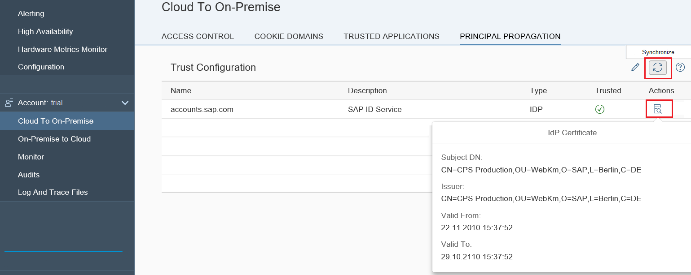

The purpose of the trust configuration is the support of principal propagation: Forwarding the logged on identity in the cloud to the internal system, which means logging on with a user that matches this identity without the need of providing the password. By default, your Cloud connector is not trusting any entity that is issuing tokens for principal propagation. Therefore, the list of trusted identity providers is empty in the beginning. If you decide to make use of the principal propagation feature, you need to establish trust to at least one identiy provider. Currently, SAML2 identity providers are supported. Trust to one or more SAML2 IDPs can be configured per account. After you've configured trust in the cockpit for your account, for example, to your own company's identity provider(s), you can synchronize this list to your Cloud connector.
Starting with Cloud connector 2.4, you can also trust HANA instances and Java applications to act like identity providers.

By pressing the Synchronize button, the list of existing identity providers will be stored locally in your Cloud connector.
When selecting the entry, you can see the following details about it, in case the trusted entity reflects a SAML2 identity provider:
Choose the icon Show Certificate Information to display detail information for the corresponding entry.
For each of the entries you can decide, whether to trust it for the principal propagation use case by choosing Edit and (de)selecting the Trusted checkbox for the respective entry. This will be stored locally.
The following procedure helps you to set up principal propagation from SAP Cloud Platform to your internal system that shall be used in a hybrid scenario.
By default, all applications within an account are allowed to use the Cloud connector associated with the account they run in. However, this behavior might not be desired. For some applications this is acceptable, as they need to interact with on-premise resources. Others, for which it is not transparent whether they try to receive some on-premise data, might turn out to be malicious. For such cases, the application whitelist is useful.
As long as there is no entry in this list, all applications will be allowed to use the Cloud connector. If one or more entries appear in the whitelist, then only these applications will be allowed to connect to the exposed systems in the Cloud connector.
By default, the Cloud connector trusts every on-premise system when connecting to it via HTTPS. As this may be an undesirable behavior from a security perspective, you can configure a trust store that acts as a whitelist of trusted on-premise systems, represented by their respective public keys. You can configure the trust store by choosing Configuration from the main menu. Go to tab On Premise, section Trust Store:
To learn more about the different types of configuring and supporting principal propagation for a particular AS ABAP, see: